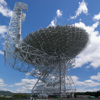
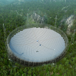
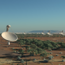

Here we've provided two interactive tables. The first contains specifications for all major pulsar surveys conducted since 1967. The second (below the first) contains data/search pipleline information for the same surveys. Some surveys used multiple search pipelines (or parameters), and these are listed as separate entries. Bibtex citations for each survey can be obtained by simply clicking the reference(s) next to the survey name. We hope you find this resource useful. We've tried to make it as complete and accurate as possible. Note that the omission of a survey here should be treated as a mistake, as opposed to a judgement on its significance. If you notice any errors, or would like to add a new entry, please get in touch via or Tweet to @scienceguyrob Tweet to @bstappers
Please refer to Lyon et al. (2015) and the URL http://www.jb.man.ac.uk/pulsar/Surveys.html if using this data (bibtex).
| Survey | Survey Year | Telescope | Centre Freq. (Mhz) | Bandwidth (Mhz) | Channel Width (Khz) | Channels | Sampling (μ sec) | Integration time (secs) | Beams | Pointings | Region | Region Sq. Deg. |
|---|---|---|---|---|---|---|---|---|---|---|---|---|
| 1st Cambridge Survey [1] | 1967 | Interplanetary Scintillation Array | 81.5 | 1 | ? | ? | 100000 | ? | ? | ? | Whole sky -8° > δ > 44° | ? |
| 1st Molonglo Survey [2] | 1968 | Molonglo | 408 | 4 | 2000 | 2 | 5000 | 15 | 1 | ? | |b| < 10°, |b| > 10° |
22980 |
| Search at Low Galactic Latitudes [3,4] | 1969 | Lovell | 408 | 4 | ? | ? | 50000 | 819 | 1 | 431 | b=-1°, b=0°, b=+1°, 11° ≤ l ≤ 125° |
? |
| Arecibo Survey 1 [5] | 197? | Arecibo | 430 | 8 | 250 | 32 | 5600 | 198 | 1 | 1909.09091 | -5° ≤ b ≤ 5°, 35° ≤ l ≤ 75°, 170° ≤ l ≤ 210° |
52 |
| Jodrell Survey A [6] | 1972 | Lovell | 408 | 4 | 2000 | 2 | 40000 | 660 | 1 | ? | -10° ≤ b ≤ 10°, 0° ≤ l ≤ 200° |
~4924 |
| 2nd Molonglo Survey [7] | 1977 | Molonglo | 408 | 4 | 800 | 4 | 20000 | 44.7 | 11 | ? | -85° < δ < +20° | ~27576 |
| Green Bank Northern Hemisphere Survey [8,9] | 1977 |  Green Bank | 400 | 16 | 2000 | 8 | 16700 | 144 | ? | ? | δ > +20° | ? |
| Princeton-NRAO Survey [10] | 1982-83 | Arecibo | 390 | 16 | 2000 | 8 | 5555.56555556 | 138 | 24000 | ? | δ ≥ -18° | ~5909 |
| Green Bank Short-period Survey [11] | 1983 | Green Bank | 390 | 8 | 250 | 32 | 2000 | 132 | ? | ? | |b| < 15°, 15° < l < 230° |
~3725 |
| Jodrell Survey B [12] | 1983-84 | Lovell | 1400 | 40 | 5000 | 8 | 2000 | 540 | ? | ? | |b| < 1°, -4° ≤ l ≤ 105° |
200 |
| Arecibo Survey 2 (a) Phase II Princeton-NRAO [13] | 1983 | Green Bank | 390 | 8 | 250 | 32 | 2000 | 132 | 1 | 14195 | δ ≥ -18° | ~3725 |
| Arecibo Survey 2 (b) [13] | 1984-85 | Arecibo | 430 | 0.96 | 60 | 16 | 300 | 39 | 1 | 12830 | |b| < 10°, 40° < l < 65° |
289 |
| Survey for millisecond pulsars at Molonglo [14] | 1985-86 | Molonglo | 843 | 3.2 | 200 | 16 | 500 | 132 | 1 | 7000 | -1° < |b| < +1°, 255° < l < 360° |
210 |
| Jodrell Survey C (610 MHz) [15] | 1985-87 | Lovell | 610 | 4/8 | 125/250 | 32 | 300 | 79 | 1 | ? | Region furthest from Galactic centre, northern galactic plane | ~1500 |
| Jodrell Survey C (925 MHz) [15] | 1985-87 | Lovell | 925 | 8 | 250 | 32 | 300 | 79 | 1 | ? | ? | See Jodrell Survey C (610 MHz) |
| Jodrell Survey C (928 MHz) [15] | 1985-87 | Lovell | 928 | 8 | 250 | 32 | 300 | 79 | 1 | ? | 1° < |b| < 2° | See Jodrell Survey C (610 MHz) |
| Jodrell Survey C (1420 MHz) [15] | 1985-87 | Lovell | 1420 | 32 | 1000 | 32 | 300 | 79 | 1 | ? | |b| < 1°, 0° < l < 60° |
See Jodrell Survey C (610 MHz) |
| Parkes Globular Cluster Survey (20cm) [16,17] | 1989-90 | Parkes | 1491 | 80/320 | 1000/5000 | 80/64 | 300 | 3000 | ? | ? | ? | ? |
| Parkes Globular Cluster Survey (50cm) [16,17] | 1988-90 | Parkes | 640 | 32 | 250 | 128 | 300 | 3000/4500 | ? | ? | ? | ? |
| Arecibo Survey 3 [18] | 198? | Arecibo | 430 | 10 | 78.125 | 128 | 516.625 | 67.7 | 1 | 10300 | |b| < 8° | ~260 |
| Parkes 20-cm Survey (System I) [19] | 1988 | Parkes | 1434 | 800 | 1000 | 80 | 300 | 78.6 | ? | ? | |b| < 4°, 20° ≤ l ≤ 270° |
800 (Systems I and II) |
| Parkes 20-cm Survey (System II) [19] | 1988 | Parkes | 1520 | 320 | 5000 | 64 | 1200 | 157.3 | ? | ? | |b| < 4°, 20° ≤ l ≤ 270° |
See Parkes 20-cm Survey (System I) |
| Arecibo 430 MHz Intermediate Galactic Latitude Survey [20] | 1989-91 | Arecibo | 430 | 10 | 78.125 | 128 | 506.625 | 66.4 | 1 | 6121 | 7° < |b| < 20° | 130 |
| High Galactic Latitude Pulsar Survey of the Arecibo Sky (H1) [21] | 1990 | Arecibo | 430 | 10 | 250 | 128 | 506 | ~40 | ? | ~91000 | Primarily covering northern latitudes |b| > 15° to the Galactic pole (H1-H5) | 146 |
| High Galactic Latitude Pulsar Survey of the Arecibo Sky (H2) [21] | 1991 | Arecibo | 430 | 8 | 250 | 32 | 250 | ~40 | ? | See High Galactic Latitude Pulsar Survey of the Arecibo Sky (H1) | See High Galactic Latitude Pulsar Survey of the Arecibo Sky (H1) | 228 |
| High Galactic Latitude Pulsar Survey of the Arecibo Sky (H3) [21] | 1992 | Arecibo | 430 | 8 | 250 | 32 | 250 | ~40 | ? | See High Galactic Latitude Pulsar Survey of the Arecibo Sky (H1) | See High Galactic Latitude Pulsar Survey of the Arecibo Sky (H1) | 214 |
| High Galactic Latitude Pulsar Survey of the Arecibo Sky (H4) [21] | 1993 | Arecibo | 430 | 8 | 250 | 32 | 250 | ~40 | ? | See High Galactic Latitude Pulsar Survey of the Arecibo Sky (H1) | See High Galactic Latitude Pulsar Survey of the Arecibo Sky (H1) | 240 |
| High Galactic Latitude Pulsar Survey of the Arecibo Sky (H5) [21] | 1994-95 | Arecibo | 430 | 8 | 250 | 32 | 250 | ~40 | ? | See High Galactic Latitude Pulsar Survey of the Arecibo Sky (H1) | See High Galactic Latitude Pulsar Survey of the Arecibo Sky (H1) | 527 |
| Arecibo Survey 4 Phase I [22] | 1991 | Arecibo | 430 | 10 | 78.125 | 128 | 516.625 | 67.7 | 1 | ? | -8° < b < 8°, 35° < l < 65° |
235 |
| Arecibo Survey 4 Phase II [23] | 1992 | Arecibo | 429 | 8 | 250 | 64 | 250 | ~40 | 1 | ? | -50° < b < -25°, 70° < l <130° |
162 |
| Parkes Southern Pulsar Survey [24] | 1991-93 | Parkes | 436 | 32 | 1250 | 256 | 300 | 157.3 | 1 | 44299 | Entire southern hemisphere | ~20626.5 |
| 2nd Cambridge Survey [25] | 1993-94 | Interplanetary Scintillation Array | 81.5 | ? | ? | 256 | 256 | ? | ? | ? | -20° > δ > 86° | ? |
| Jodrell Millisecond Pulsar Survey [26] | 1993-94 | Lovell | 418 | 8 | 125 | 64 | 300 | 315 | ? | ? | 35° > δ > 90° | ? |
| Green Bank Fast Pulsar Survey [27] | 1994-96 | Green Bank | 370 | 40 | 78.125 | 512 | 256 | 134 | ? | ? | ~77% of Northern Hemisphere | 17400 |
| Parkes Multibeam Pulsar Survey [28,29] | 1997 | Parkes | 1374 | 288 | 3000 | 96 | 250 | 2100 | 13 | 2670 | |b| < 5°, 50° < l < 260° |
1550 |
| The Bologna submillisecond pulsar survey [30] | 1998-99 | Northern Cross | 408 | 4 | 32 | 128 | 64 | 67 | ? | ? | 4° < δ < 42° | ? |
| Swinburne Intermediate-lat Pulsar Survey [31] | 1998-99 | Parkes | 1374 | 288 | 3000 | 96 | 125 | 265 | 13 | 4764 | 5° < b < 15°, -100° < l < 50° |
1191 |
| Parkes High-lat Multibeam Pulsar Survey [32] | 2000-03 | Parkes | 1374 | 288 | 3000 | 96 | 125 | 265 | 13 | 6456 | |b| < 60°, 220° < l < 260° |
? |
| Survey of The Magellanic Clouds [33] | 2000-01 | Parkes | 1374 | 288 | 3000 | 96 | 1000 | 8400 | 13 | 209 | Magellanic Clouds | ? |
| 1.4 GHz Arecibo Survey (DM < 100) [34] | 2001-02 | Arecibo | 1175 | 100 | 0.390625 | 256 | 64 | 7200 | 1 | ? | Every known Galactic globular cluster visible from Arecibo, within 70 kpc of the Sun without any selection bias toward larger or denser clusters. | ? |
| 1.4 GHz Arecibo Survey (DM > 100) [34] | 2001-02 | Arecibo | 1475 | 100 | 0.1953125 | 512 | 128 | 7200 | 1 | ? | Every known Galactic globular cluster visible from Arecibo, within 70 kpc of the Sun without any selection bias toward larger or denser clusters. | ? |
| Large Area Survey for Radio Pulsars [35] | 2001-02 | Parkes | 1374 | 288 | 3000 | 96 | 125 | 256 | 13 | 7232 | 15° ≤ b ≤ 30°, -100° ≤ l ≤ 50° |
~4150 |
| EGRET 56 Pulsar Survey [36] | 2002-03 | Parkes | 1374 | 288 | 3000 | 96 | 125 | 2100 | 13 | 232 | 5° < |b| < 73° | ? |
| EGRET Error Box Survey [37] | 2003 | Arecibo | 327 | 25 | 48.828125 | 512 | 125 | 260 | 1 | 224 | |b|>5°, 2° < δ < 38° |
9.6 |
| A0327 Pilot [38] | 2003 | Arecibo | 327 | 25 | 48.828125 | 512 | 256 | 60 | ? | ? | -1° < δ < 28°, excluding the region within 5° of the Galactic plane | ? |
| The Perseus Arm Pulsar Survey [39] | 2004-09 | Parkes | 1374 | 288 | 3000 | 96 | 125 | 2100 | 13 | 913 | |b| < 5°, 200° < l < 260° |
? |
| The 8gr8 Cygnus Survey [40,41] | 2004-05 | Westerbork | 328 | 10 | 19.53125 | 512 | 819.2 | 6872 | ? | 144 | The region of the Galactic plane between -0.25° < b < 7.25°, 100° < l < 40° |
420 |
| Parkes Deep Northern Galactic Plane Survey [42] | 2004-05 | Parkes | 1374 | 288 | 3000 | 96 | 125 | 4200 | 13 | 120 | |b| ≤ 2°, 50° ≤ l ≤ 60° |
? |
| P-ALFA Survey (intial) (WAPP) [43,44] | 2004 | Arecibo | 1420 | 100 | 390.625 | 256 | 64 | 134 | 7 | 1784 | |b| ≤ 5°, 32° ≤ l ≤ 77°, 168° ≤ l ≤ 214° |
? |
| P-ALFA Survey (anticipated) (WAPP) [43,44] | 2004-10 | Arecibo | 1420 | 300 | 390.625 | 1024 | 64 | 134 | 7 | ? | |b| ≤ 5°, 32° ≤ l ≤ 77°, 168° ≤ l ≤ 214° |
? |
| 6.5 Ghz Multibeam Pulsar Survey [45] | 2006-07 | Parkes | 6591 | 576 | 3000 | 192 | 125 | 1055 | 7 | 2560 | |b| ≤ 0.25°, -60° ≤ l ≤ 30° |
? |
| Green Bank 350 MHz Drift Scan [46] | 2007 | Green Bank | 350 | 50 | 24.4140625 | 2048 | 81.92 | 140 | ? | ? | Azimuth restrictions allowed access to declination ranges of -7°.72 < δ < 38°.43, -20°.66 < δ < 38°.43, for azimuths of 229° and 192° |
? |
| GBT350 (Spigot) [38] | 2007 | Green Bank | 350 | 50 | 24.4140625 | 2048 | 82 | 140 | ? | ? | ? | 10300 |
| P-ALFA Survey (MOCK) [44,47,48] | 2009-present | Arecibo | 1375 | 322.6 | 336.041667 | 960 | 65.5 | 120-300 | 7 | ~5045 | |b| ≤ 5°, 30° ≤ l ≤ 78°, 162° ≤ l ≤ 214° |
? |
| GBNCC (GUPPI) [38,49] | 2009-14 | Green Bank | 350 | 100 | 24.4140625 | 4096 | 82 | 120 | ? | ~30000 | δ > -40°, (Sky visible to Green Bank) |
>13500 |
| Southern HTRU (LOW) [50] | 2010-12 | Parkes | 1352 | 340 | 390.625 | 870 | 64 | 4300 | 13 | 1230 | |b| ≤ 3°.5, -80° < l < 30° |
~840 |
| Southern HTRU (MED) [50,51] | 2010-12 | Parkes | 1352 | 340 | 390.625 | 870 | 64 | 540 | 13 | 7312 | |b| ≤ 15°, -120° < l < 30° |
~4500 |
| Southern HTRU (HIGH) [50] | 2010-12 | Parkes | 1352 | 340 | 390.625 | 870 | 64 | 270 | 13 | 34099 | δ < +10° | ? |
| A0327 (MOCK) [38] | 2010 | Arecibo | 327 | 57 | 55.6640625 | 1024 | 125 | 60 | ? | ? | -1° < δ < 28°, excluding the region within 5° of the Galactic plane | ? |
| LPPS [52] | 2010 | LOFAR | 142 | 6.8 | 12.1428571 | 560 | 655 | 3420 | 7 | 246 | ? | ? |
| LOTAS [52] | 2010-11 | LOFAR | 143 | 48 | 12.295082 | 3904 | 1300 | 1020 | 19 | 206 | ? | ? |
| Northern HTRU (LOW) [53,54] | 2010-14 | Effelsberg | 1360 | 240 | 585.9 | 410 | 54.61 | 1500 | 7 | 12485 | |b| < 3°.5 | ? |
| Northern HTRU (MED) [53,54] | 2010-14 | Effelsberg | 1360 | 240 | 585.9 | 410 | 54.61 | 180 | 7 | 53581 | |b| < 15° | ? |
| Northern HTRU (HIGH) [53,54] | 2010-14 | Effelsberg | 1360 | 240 | 585.9 | 410 | 54.61 | 90 | 7 | 152305 | |b| > 15° | ? |
| SPAN512 [55] | 2012 | Nançay | 1486 | 512 | 500 | 1024 | 64 | 1080 | 2 | 5800 | 3.5° < |b| <5°, 74°≤ l <150° |
230 |
| A0327 (PUPPI) [38] | 2014 | Arecibo | 327 | 69 | 24.5028409 | 2816 | 82 | 60 | ? | ? | -1° < δ < 28°, excluding the region within 5° of the Galactic plane | ? |
| LOTAAS [56,57,58] | 2013 | LOFAR | 135.248 | 94.9219 | 12.207 | 2592 | 491.52 | 3600 | 222 | 1950 | All-Northern-sky survey | 20625.5 |
| SUPERB [59] | 2014 | Parkes | 1374 | 340 | 332.03125 | 1024 | 32 | 540 | 13 | 6644 | -25° ≤ |b| ≤ 25° | ? |
| GMRT High Resolution Southern Sky Survey (MID) [60] | 2014 | GMRT | 322 | 32 | 15.625 | 2048 | 60 | 1200 | 1 | 682 | 5° < |b| < 20°, -40° < δ < -54° |
1212 |
| GMRT High Resolution Southern Sky Survey (HIGH) [60] | 2014 | GMRT | 322 | 32 | 31.25 | 1024 | 30 | 720 | 1 | 911 | |b| > 20°, -40° < δ < -54° |
1620 |
| FAST* [61] | 2016 |  FAST | 1315 | 400 | 42.1052632 | 9500 | 100 | 600 | 19 | ? | ? | ? |
| SKA** (Configuration A 3000 Dishes) [62] | 2020-22 |  SKA | 1250 | 500 | 50 | 9500 | 64 | 1800 | ? | ? | ? | 35000 |
| SKA** (Configuration B Aperture Array) [62] | 2020-22 | SKA | 650 | 300 | 50 | 9500 | 64 | 1800 | ? | ? | ? | 35000 |
* Projected.
** Simulation and best guess estimate.
| Survey | Survey Year | Telescope | Samples per second | Bits | DM Trials | DM Trial lower limit | DM Trial upper limit | Candidates | Notes |
|---|---|---|---|---|---|---|---|---|---|
| 1st Cambridge Survey [1] | 1967 | Interplanetary Scintillation Array | ? | ? | ? | ? | ? | ? | |
| 1st Molonglo Survey [1] | 1968 | Molonglo | 400 | ? | ? | ? | ? | ? | Square degree value obtained from [6] |
| Search at Low Galactic Latitudes [2,3] | 1969 | Lovell | ? | ? | ? | ? | ? | ? | Survey year estimated from publication date, reports 2^14 samples. |
| Arecibo Survey 1 [4] | 197? | Arecibo | 5714.28571428571 | ? | 64 | 0 | 1240 | ? | 0.5 sq degrees searched per hour. Pointings derived from Sq degrees searched & fact that a point in the sky remained in the beam for 3.3 minutes. |
| Jodrell Survey A [5] | 1972 | Lovell | 50 | ? | ? | 0 | ~500 | ? | 1.5 sr searched |
| 2nd Molonglo Survey [6] | 1977 | Molonglo | 200 | 4 | ? | 0 | 130/520/800 | 2500 | 8.4 sr searched. 105 days of total observations. |
| Green Bank Northern Hemisphere Survey [7,8] | 1977 | Green Bank | 479.041916167665 | ? | 8 | 0 | 120 | ? | |
| Princeton-NRAO Survey [9] | 1982-83 | Arecibo | 1439.99740800351 | 3 | 8 | 0 | 117 | ? | |
| Green Bank Short-period Survey [10] | 1983 | Green Bank | 16000 | 3 | ? | ? | ? | ? | |
| Jodrell Survey B [11] | 1983-84 | Lovell | 4000 | 3 | ? | 0 | 17000 | ? | |
| Arecibo Survey 2 (a) Phase II Princeton-NRAO [12] | 1983 | Green Bank | 16000 | 3 | ? | ? | ? | 5405 | 2x10^6 combinations of period and DM tried. |
| Arecibo Survey 2 (b) [12] | 1984-85 | Arecibo | 53333.3333333333 | 3 | ? | ? | ? | ? | 2x10^6 combinations of period and DM tried. |
| Survey for millisecond pulsars at Molonglo [13] | 1985-86 | Molonglo | 32000 | ? | 12 | 11/175 | 400/1750 | ? | |
| Jodrell Survey C (610 MHz) [14] | 1985-87 | Lovell | 106666.666666667 | 1 | 39 | 32/64/85 | 373/746/995 | ? | |
| Jodrell Survey C (925 MHz) [14] | 1985-87 | Lovell | 106666.666666667 | 1 | 39 | 114 | 1430 | ? | |
| Jodrell Survey C (928 MHz) [14] | 1985-87 | Lovell | 106666.666666667 | 1 | 39 | 114 | 1430 | ? | |
| Jodrell Survey C (1420 MHz) [14] | 1985-87 | Lovell | 106666.666666667 | 1 | 39 | 104 | 1770 | ? | |
| Parkes Globular Cluster Survey (20cm) [15,16] | 1989-90 | Parkes | 266667/213333 | 1 | 100 | 0 | 309 | ? | |
| Parkes Globular Cluster Survey (50cm) [15,16] | 1988-90 | Parkes | 426666.666666667 | 1 | 100 | ? | 309 | ? | |
| Arecibo Survey 3 [17] | 198? | Arecibo | 247761.916283571 | 4 | 256 | 0 | 507 | ? | |
| Parkes 20-cm Survey (System I) [18] | 1988 | Parkes | 266666.666666667 | 1 | 100 | 0 | 2000 | 150000 | |
| Parkes 20-cm Survey (System II) [18] | 1988 | Parkes | 53333.3333333333 | 1 | 100 | 0 | 3000 | 150000 | |
| Arecibo 430 MHz Intermediate Galactic Latitude Survey [19] | 1989-91 | Arecibo | 252652.356279299 | ? | 163 | 0 | 200 | ? | 113 survey hours, each pointing was 2^17 samples |
| High Galactic Latitude Pulsar Survey of the Arecibo Sky (H1) [20] | 1990 | Arecibo | 252964.42687747 | 4 | 64 | 0 | 50 | ? | 91,000 points on sky observed during H1 to H5. |
| High Galactic Latitude Pulsar Survey of the Arecibo Sky (H2) [20] | 1991 | Arecibo | 128000 | 3 | 64 | 0 | 50 | ? | |
| High Galactic Latitude Pulsar Survey of the Arecibo Sky (H3) [20] | 1992 | Arecibo | 128000 | 3 | 64 | 0 | 50 | ? | |
| High Galactic Latitude Pulsar Survey of the Arecibo Sky (H4) [20] | 1993 | Arecibo | 128000 | 3 | 64 | 0 | 50 | ? | |
| High Galactic Latitude Pulsar Survey of the Arecibo Sky (H5) [21] | 1994-95 | Arecibo | 128000 | 3 | 64 | 0 | 50 | ? | |
| Arecibo Survey 4 Phase I [22] | 1991 | Arecibo | 247761.916283571 | 3 | ? | ? | ? | ? | Assumed same as Phase II. |
| Arecibo Survey 4 Phase II [23] | 1992 | Arecibo | 256000 | 3 | 192 | 0 | 300 | ? | |
| Parkes Southern Pulsar Survey [24] | 1991-93 | Parkes | 853333.333333333 | 4 | 738 | 0 | 777 | 40000 | 210 MB of data per observation |
| 2nd Cambridge Survey [25] | 1993-94 | Interplanetary Scintillation Array | ? | ? | 640 | 0 | 102.55 | ? | |
| Jodrell Millisecond Pulsar Survey [26] | 1993-94 | Lovell | 213333.3333 | 1 | 182 | 0 | 770 | ? | |
| Green Bank Fast Pulsar Survey [27] | 1994-96 | Green Bank | 2000000 | 1 | 512 | 0 | 20 | ? | 4GB of data collected every 4.8 hours. |
| Parkes Multibeam Pulsar Survey [28,29] | 1997 | Parkes | 384000 | 1 | 325 | 0 | 2203 | 8000000 | |
| Bologna submillisecond pulsar survey [30] | 1998-99 | Northern Cross | 2000000 | 1 | ? | ? | ? | ? | |
| Swinburne Intermediate-lat Pulsar Survey [31] | 1998-99 | Parkes | 768000 | 1 | 375 | 0 | 562.5 | > 200000 | Four pointings gives roughly 1 degree so 4764/4 = 1191. 30GB candidate data even after filtering. 1.6TB total data set. |
| Parkes High-lat Multibeam Pulsar Survey [32] | 2000-03 | Parkes | 768000 | 1 | ? | 0 | 1088 | ? | |
| Survey of The Magellanic Clouds [33] | 2000-01 | Parkes | 96000 | 1 | 228 | 0 | 2200 | ? | Different DM searches: 102 trials between 0 and 277 cm-3 (1 ms time res), 42 between 0 and 550 cm-3 (2 ms time res), 42 between 0 and 1100 cm-3 (4 ms time res), 42 between 0 and 2200 cm-3 (8 ms time res). |
| 1.4 GHz Arecibo Survey (DM < 100) [34] | 2001-02 | Arecibo | 4000000 | 16 | ? | ? | ? | ? | 8MB-1 or 30GB per hour, 4 TB in total |
| 1.4 GHz Arecibo Survey (DM > 100) [34] | 2001-02 | Arecibo | 4000000 | 16 | ? | ? | ? | ? | Same as 1.4 GHz Arecibo Survey (DM < 100). |
| Large Area Survey for Radio Pulsars [35] | 2001-02 | Parkes | 768000 | 1 | 375 | 0 | 562.5 | 9307584 | 2.4TB of data in total. |
| EGRET 56 Pulsar Survey [36] | 2002-03 | Parkes | 768000 | 1 | 150 | 0 | 542 | ? | 200 MB of data per beam and 600GB in total. |
| EGRET Error Box Survey [37] | 2003 | Arecibo | 4096000 | ? | 392 | 0 | 491.2 | ? | |
| A0327 Pilot [38] | 2003 | Arecibo | 2000000 | 16 (4 scaled) | 6358 | 0 | 1000 | ? | |
| The Perseus Arm Pulsar Survey [39] | 2004-09 | Parkes | 768000 | 1 | 325/183 | 0 | 1088/1500 | ? | Two pipelines, HTRU and PMFind so different DM trial parameters. |
| The 8gr8 Cygnus Survey [40,41] | 2004-05 | Westerbork | 625000 | ? | 488 | 0 | 340 | ? | |
| Parkes Deep Northern Galactic Plane Survey [42] | 2004-05 | Parkes | 768000 | 1 | 496 | 1.1 | 4931 | ? | |
| P-ALFA Survey (intial) (WAPP) [43,44] | 2004 | Arecibo | 4000000 | 16 | 96 | 0 | 980 | See P-Alfa Mock | 0.3TB per hour. |
| P-ALFA Survey (anticipated) (WAPP) [43,44] | 2004-10 | Arecibo | 16000000 | 16 | 96/1272 | 0 | 980/1000 | See P-ALFA Survey (MOCK). | 0.3TB of data per hour. 2 byte integers stored at 64 microsecond intervals. Different DM trial values for periodicity search/single pulse search (see Deneva et al.). |
| 6.5 Ghz Multibeam Pulsar Survey [45] | 2006-07 | Parkes | 1536000 | 1 | ~286 | 0 | 2000 | >3500000 | 5TB of data collected. 170 candidates per beam = over 3.5 million for the survey. |
| Green Bank 350 MHz Drift Scan [46] | 2007 | Green Bank | 25000000 | 16 | ? | ? | ? | ? | 1491 hours of data taken. |
| GBT350 (Spigot) [38] | 2007 | Green Bank | 24975609.7560976 | ? | ? | ? | ? | ? | Square degrees/survey year details found here. |
| P-ALFA Survey (MOCK) [44,47,48] | 2009-present | Arecibo | 14656488.5496183 | 16 | 5016 | 0 | 2038 | >5000000 | 16-bit data reduced to 4 for data storage requirements. The ~5045 pointings are for the MOCK spectrometer between 2009-12 in the outer galaxy. Candidates numbers obtained here. |
| GBNCC (GUPPI) [38,49] | 2009-14 | Green Bank | 49951219.5121951 | ? | 17352/26532 | 0 | 500/3000 | >1200000 | Dispersion trials and range increased due to Thornton burst discovery, thus two sets of DM values. |
| Southern HTRU (LOW) [50] | 2010-12 | Parkes | 13593750 | 8 | ? | ? | ? | 1600000 | 16GB of data per beam. 1PB data total. |
| Southern HTRU (MED) [50,51] | 2010-12 | Parkes | 13593750 | 8 | 1436 | 0 | 2000 | 9509600 | 2 GB of data per beam. |
| Southern HTRU (HIGH) [50] | 2010-12 | Parkes | 13593750 | 8 | 8000 | 0 | 800 | 44328700 | 1GB of data per beam. |
| A0327 (MOCK) [38] | 2010 | Arecibo | 8192000 | ? | 6358 | 0 | 1000 | ? | |
| LPPS [52] | 2010 | LOFAR | 854961.832061069 | 8 | 3487 | 0 | 3000 | ? | |
| LOTAS [52] | 2010-11 | LOFAR | 3003076.92307692 | 8 | 16845/18100 | 0 | 1000 | ? | |
| Northern HTRU (LOW) [53,54] | 2010-14 | Effelsberg | 7507782.45742538 | 8 | 3240/406 | 0 | 978/3000 | >80000000 | 13.4 GB of data per beam, ~38MBs-1. 5PB data total. Quick search pipeline searches 406 trial DM's up to 3000. |
| Northern HTRU (MED) [53,54] | 2010-14 | Effelsberg | 7507782.45742538 | 8 | 3240/406 | 0 | 978/3000 | >80000000 | 1.6 GB of data per beam. Quick search pipeline searches high DM range up to 3000. |
| Northern HTRU (HIGH) [53,54] | 2010-14 | Effelsberg | 7507782.45742538 | 8 | 3240/406 | 0 | 978/3000 | >80000000 | 0.8 GB of data per beam. Quick search pipeline searches high DM range up to 3000. |
| SPAN512 [55] | 2012 | Nançay | 16000000 | 4 | ? | ? | 1800 | ? | 50TB data in total. |
| A0327 (PUPPI) [38] | 2014 | Arecibo | 34341463.4146341 | ? | 6358 | 0 | 1000 | ? | |
| LOTAAS [56,57,58] | 2013 | LOFAR | 5273437.5 | 8 | 7000 | 0 | 500 | 39000000 | Each 1-hour pointing produces 16 TB of raw data. Candidate numbers obtained via private communication. |
| SUPERB [59] | 2014 | Parkes | 32000000 | 8 | 1448 | 0 | 400 | ? | |
| GMRT High Resolution Southern Sky Survey (MID) [60] | 2014 | GMRT | 34133333.3333333 | ? | 6000 | 0.01 | 500/2000 | ? | 76GB of data per beam. |
| GMRT High Resolution Southern Sky Survey (HIGH) [60] | 2014 | GMRT | 34133333.3333333 | ? | 6000 | 0.01 | 500/2000 | ? | 45GB of data per beam. |
| FAST* [61] | 2016 | FAST | 95000000 | 2 | ? | ? | ? | ? | Simulation. For the initial 19-beam receiver, the data rate is just under 0.5 GB per second. For 100 beams it is about 2.4 GB per second. |
| SKA** (Configuration A 3000 Dishes) [62] | 2020-22 | SKA | 148437500 | 2 | ? | ? | ? | ? | |
| SKA** (Configuration B Aperture Array) [62] | 2020-22 | SKA | 148437500 | 2 | ? | ? | ? | ? |
* Projected.
** Simulation and best guess estimate.
@article{Hewish:1968:jb,
author = {{Hewish}, A. and {Bell}, S.~J. and {Pilkington}, J.~D.~H. and {Scott}, P.~F. and {Collins}, R.~A.},
title = {{Observation of a Rapidly Pulsating Radio Source}},
journal = {Nature},
year = {1968},
volume = {217},
issue = {5130},
pages = {709-713},
doi = {10.1038/217709a0},
url = {http://dx.doi.org/10.1038/217709a0}
}
@article{Large:1968:mi,
author = {{Large}, M.~I. and {Vaughan}, A.~E. and {Wielebinski}, R.},
title = {{Pulsar Search at the Molonglo Radio Observatory}},
journal = {Nature},
year = {1968},
volume = {220},
pages = {753-756},
doi = {10.1038/220753a0},
url = {http://dx.doi.org/10.1038/220753a0}
}
@article{Vaughan:1970:lm,
author = {{Vaughan}, A.~E. and {Large}, M.~I.},
title = {{Five New Pulsars}},
journal = {Nature},
year = {1970},
volume = {225},
issue = {5228},
pages = {167-168},
doi = {10.1038/225167a0},
url = {http://dx.doi.org/10.1038/225167a0}
}
@article{Davies:1970:lm,
author = {{Davies}, J.~G. and {Large}, M.~I. and {Pickwick}, A.~C.},
title = {{Five New Pulsars}},
journal = {Nature},
year = {1970},
volume = {227},
pages = {1123-1124},
doi = {10.1038/2271123a0},
url = {http://dx.doi.org/10.1038/2271123a0}
}
@article{Hulse:1974:jh,
author = {{Hulse}, R.~A. and {Taylor}, J.~H.},
title = {{A High-Sensitivity Pulsar Survey}},
journal = {Astrophysical Journal},
year = {1974},
month = {July},
volume = {191},
pages = {L59},
doi = {10.1086/181548},
url = {http://dx.doi.org/10.1086/181548}
}
@article{Davies:1977:sj,
author = {{Davies}, J.~G. and {Lyne}, A.~G. and {Seiradakis}, J.~H.},
title = {{The galactic distribution of pulsars}},
journal = {Monthly Notices of the Royal Astronomical Society},
year = {1977},
month = {June},
volume = {179},
pages = {635-650},
doi = {10.1093/mnras/179.4.635},
url = {http://dx.doi.org/10.1093/mnras/179.4.635}
}
@article{Manchester:1978:rl,
author = {{Manchester}, R.~N. and {Lyne}, A.~G. and {Taylor}, J.~H. and {Durdin}, J.~M. and {Large}, M.~I. and {Little}, A.~G.},
title = {{The second Molonglo pulsar survey - discovery of 155 pulsars.}},
journal = {Monthly Notices of the Royal Astronomical Society},
year = {1978},
month = {November},
volume = {185},
pages = {409-421},
doi = {10.1093/mnras/185.2.409},
url = {http://dx.doi.org/10.1093/mnras/185.2.409}
}
@article{Damashek:1978:mt,
author = {{Damashek}, M. and {Taylor}, J.~H. and {Hulse}, R.~A.},
title = {{Parameters of 17 newly discovered pulsars in the northern sky}},
journal = {Astrophysical Journal},
year = {1978},
month = {October},
volume = {225},
pages = {L31-L33},
doi = {10.1086/182786},
url = {http://dx.doi.org/10.1086/182786}
}
@article{Damashek:1982:bp,
author = {{Damashek}, M. and {Backus}, P.~R. and {Taylor}, J.~H. and {Burkhardt}, R.~K.},
title = {{Northern Hemisphere pulsar survey - A third radio pulsar in a binary system}},
journal = {Astrophysical Journal},
year = {1982},
month = {feb},
volume = {253},
pages = {L57-L60},
doi = {10.1086/183736},
url = {http://dx.doi.org/10.1086/183736}
}
@article{Dewey:1985:wm,
author = {{Dewey}, R.~J. and {Taylor}, J.~H. and {Weisberg}, J.~M. and {Stokes}, G.~H.},
title = {{A search for low-luminosity pulsars}},
journal = {Astrophysical Journal},
year = {1985},
month = {July},
volume = {294},
pages = {L25-L29},
doi = {10.1086/184502},
url = {http://dx.doi.org/10.1086/184502}
}
@article{Stokes:1985:jh,
author = {{Stokes}, G.~H. and {Taylor}, J.~H. and {Weisberg}, J.~M. and {Dewey}, R.~J.},
title = {{A survey for short-period pulsars}},
journal = {Nature},
year = {1985},
month = {October},
volume = {317},
number = {6040},
pages = {787-788},
doi = {10.1038/317787a0},
url = {http://dx.doi.org/10.1038/317787a0}
}
@article{Clifton:1986:tr,
author = {{Clifton}, T.~R. and {Lyne}, A.~G.},
title = {{High-radio-frequency survey for young and millisecond pulsars}},
journal = {Nature},
year = {1986},
volume = {320},
pages = {43-45},
doi = {10.1038/320043a0},
url = {http://dx.doi.org/10.1038/320043a0}
}
@article{Stokes:1986:sd,
author = {{Stokes}, G.~H. and {Segelstein}, D.~J. and {Taylor}, J.~H. and {Dewey}, R.~J.},
title = {{Results of two surveys for fast pulsars}},
journal = {Astrophysical Journal},
year = {1986},
month = {December},
volume = {311},
pages = {694-700},
doi = {10.1086/164808},
url = {http://dx.doi.org/10.1086/164808}
}
@article{Damico:1988:mr,
author = {{D'Amico}, N. and {Manchester}, R.~N. and {Durdin}, J.~M. and {Stokes}, G.~H. and {Stinebring}, D.~R. and {Taylor}, J.~H. and {Brissenden}, R.~J.~V.},
title = {{A survey for millisecond pulsars at Molonglo}},
journal = {Monthly Notices of the Royal Astronomical Society},
volume = {234},
number = {2},
pages = {437-443},
year = {1988},
doi = {10.1093/mnras/234.2.437},
URL = {http://dx.doi.org/10.1093/mnras/234.2.437}
}
@article{Biggs:1992:ln,
author = {{Biggs}, J.~D. and {Lyne}, A.~G.},
title = {{The Jodrell bank 'C' Pulsar Survey: a survey of the northern galactic plane for rapidly rotating pulsars}},
journal = {Monthly Notices of the Royal Astronomical Society}
volume = {254},
number = {2},
pages = {257-263},
year = {1992},
doi = {10.1093/mnras/254.2.257},
url = {http://dx.doi.org/10.1093/mnras/254.2.257}
}
@article{Manchester:1990:da,
author = {{Manchester}, R.~N. and {Lyne}, A.~G. and {D'Amico}, N. and {Johnston}, S. and {Lim}, J. and {Kniffen}, D.~A.},
title = {{A 5.75-millisecond pulsar in the globular cluster 47 Tucanae}},
journal = {Nature},
volume = {345},
pages = {598-600},
doi = {10.1038/345598a0},
url = {http://dx.doi.org/10.1038/345598a0}
}
@article{Manchester:1990:ra,
author = {{Manchester}, R.~N. and {Lyne}, A.~G. and {Robinson}, C. and {D'Amico}, N and {Bailes}, M. and {Lim}, J.},
title = {{Discovery of ten millisecond pulsars in the globular cluster 47 Tucanae}},
journal = {Nature},
volume = {352},
pages = {219-221},
doi = {10.1038/352219a0},
url = {http://dx.doi.org/10.1038/352219a0}
}
@article{Nice:1995:fa,
author = {{Nice}, D.~J. and {Fruchter}, A.~S. and {Taylor}, J.~H.},
title = {{A Search for Fast Pulsars along the Galactic Plane}},
journal = {Astrophysical Journal},
year = {1995},
month = {August},
volume = {449},
pages = {156},
doi = {10.1086/176041},
url = {http://dx.doi.org/10.1086/176041}
}
@article{Johnston:1992:lr,
author = {{Johnston}, S. and {Lyne}, A.~G. and {Manchester}, R.~N. and {Kniffen}, D.~A. and {D'Amico}, N. and {Lim}, J. and {Ashworth}, M.},
title = {{A high-frequency survey of the southern Galactic plane for pulsars}},
journal = {Monthly Notices of the Royal Astronomical Society},
year = {1992},
month = {April},
volume = {255},
pages = {401-411},
doi = {10.1093/mnras/255.3.401},
url = {http://dx.doi.org/10.1093/mnras/255.3.401}
}
@article{Navarro:2003:ab,
author = {{Navarro}, J. and {Anderson}, S.~B. and {Freire}, P.~C.},
title = {{The Arecibo 430 MHz Intermediate Galactic Latitude Survey: Discovery of Nine Radio Pulsars}},
journal = {The Astrophysical Journal},
volume = {594},
number = {2},
pages = {943},
year = {2003},
doi = {10.1086/377153},
url = {http://dx.doi.org/10.1086/377153}
}
@article{Foster:1995:sc,
author = {{Foster}, R.~S. and {Cadwell}, B.~J. and {Wolszczan}, A. and {Anderson}, S.~B.},
title = {{A High Galactic Latitude Pulsar Survey of the Arecibo Sky}},
journal = {Astrophysical Journal},
year = {1995},
month = {December},
volume = {454},
pages = {826},
doi = {10.1086/176535},
url = {http://dx.doi.org/10.1086/176535}
}
@article{Nice:1993:jh,
author = {{Nice}, D.~J. and {Taylor}, J.~H. and {Fruchter}, A.~S.},
title = {{Two newly discovered millisecond pulsars}},
journal = {Astrophysical Journal},
year = {1993},
month = {January},
volume = {402},
pages = {L49-L52},
doi = {10.1086/186697},
url = {http://dx.doi.org/10.1086/186697}
}
@article{Camilo:1993:nt,
author = {{Camilo}, F. and {Nice}, D.~J. and {Taylor}, J.~H.},
title = {{Discovery of two fast-rotating pulsars}},
journal = {Astrophysical Journal},
year = {1993},
month = {July},
volume = {412},
pages = {L37-L40},
doi = {10.1086/186934},
url = {http://dx.doi.org/10.1086/186934}
}
@article{Manchester:1996:ti,
author = {{Manchester}, R.~N. and {Lyne}, A.~G. and {D'Amico}, N. and {Bailes}, M. and {Johnston}, S. and {Lorimer}, D.~R. and {Harrison}, P.~A. and {Nicastro}, L. and {Bell}, J.~F.},
title = {{The Parkes Southern Pulsar Survey. I. Observing and data analysis systems and initial results}},
journal = {Monthly Notices of the Royal Astronomical Society},
year = {1996},
volume = {279},
pages = {1235-1250},
doi = {10.1093/mnras/279.4.1235},
url = {http://dx.doi.org/10.1093/mnras/279.4.1235}
}
@article{Shrauner:1998:jt,
author = {{Shrauner}, J.~A. and {Taylor}, J.~H. and {Woan}, G.},
title = {{The Second Cambridge Pulsar Survey At 81.5 MHz}},
journal = {The Astrophysical Journal},
year={1998},
volume = {509},
number = {2},
doi = {10.1086/306510},
url = {http://dx.doi.org/10.1086/306510}
}
@article{Nicastro:1995:mb,
author = {{Nicastro}, L. and {Lyne}, A.~G. and {Lorimer}, D.~R. and {Harrison}, P.~A. and {Bailes}, M. and {Skidmore}, B.~D.},
title = {{PSR:J1012+5307:a 5.26-ms pulsar in a 14.5-h binary system}},
journal = {Monthly Notices of the Royal Astronomical Society},
year = {1995},
volume = {273},
number = {1},
pages = {L68-L70},
doi = {10.1093/mnras/273.1.L68},
url = {http://dx.doi.org/10.1093/mnras/273.1.L68}
}
@article{Sayer:1997:rw,
author = {{Sayer},R.~W. and {Nice}, D.~J. and {Taylor}, J.~H.},
title = {{The Green Bank Northern Sky Survey for Fast Pulsars}},
journal = {The Astrophysical Journal},
volume = {474},
number = {1},
pages = {426},
year = {1997},
doi = {10.1086/303446},
url = {http://dx.doi.org/10.1086/303446}
}
@article{Manchester:2001:fo,
author = {{Manchester}, R.~N. and {Lyne}, A.~G. and {Camilo}, F. and {Bell}, J.~F. and {Kaspi}, V.~M. and {D'Amico}, N. and {McKay}, N.~P.~F. and {Crawford}, F. and {Stairs}, I.~H. and {Possenti}, A. and {Kramer}, M. and {Sheppard}, D.~C.},
title = {{The Parkes multi-beam pulsar survey - I. Observing and data analysis systems, discovery and timing of 100 pulsars}},
journal = {Monthly Notices of the Royal Astronomical Society},
year = {2001},
volume = {328},
number = {1},
pages = {17-35},
doi = {10.1046/j.1365-8711.2001.04751.x},
url = {http://dx.doi.org/10.1046/j.1365-8711.2001.04751.x}
}
@article{Lorimer:2015:pe,
author = {{Lorimer}, D.~R. and {Esposito}, P. and {Manchester}, R.~N. and {Possenti}, A. and {Lyne} A.~G. and {McLaughlin} M.~A. and {Kramer} M. and {Hobbs} G. and {Stairs} I.~H. and {Burgay} M. and {Eatough} R.~P. and {Keith}, M.~J. and {Faulkner}, A.~J. and {D'Amico} N. and {Camilo} F. and {Corongiu} A. and {Crawford} F.},
title = {{The Parkes multibeam pulsar survey: VII. Timing of four millisecond pulsars and the underlying spin period distribution of the Galactic millisecond pulsar population}},
journal = {Monthly Notices of the Royal Astronomical Society},
year = {2015},
url = {http://arxiv.org/abs/1501.05516}
}
@misc{Damico:1999:nd,
author = {{D'Amico}, N.},
title = {{The Bologna submillisecond pulsar survey}},
journal = {Pulsar Astronomy 2000 and Beyond ASP Conference Series Vol. 3},
year = {1999},
url = {http://arxiv.org/pdf/astro-ph/9911207v1.pdf}
}
@article{Edwards:2001:tm,
author = {{Edwards}, R.~T. and {Bailes}, M. and van {Straten}, W. and {Britton}, M.~C.},
title = {{The Swinburne intermediate-latitude pulsar survey}},
journal = {Monthly Notices of the Royal Astronomical Society},
year = {2001},
volume = {326},
number = {1},
pages = {358-374},
doi = {10.1046/j.1365-8711.2001.04637.x},
url = {http://dx.doi.org/10.1046/j.1365-8711.2001.04637.x}
}
@article{Burgay:2006:jd,
author = {{Burgay}, M. and {Joshi}, B.~C. and {D'Amico}, N. and {Possenti}, A. and {Lyne}, A.~G. and {Manchester}, R.~N. and {McLaughlin}, M.~A. and {Kramer}, M. and {Camilo}, F. and {Freire}, P.~C.~C.},
title = {{The Parkes High-Latitude pulsar survey}},
journal = {Monthly Notices of the Royal Astronomical Society},
year = {2006},
month = {May},
volume = {368},
pages = {283-292},
doi = {10.1111/j.1365-2966.2006.10100.x},
url = {http://dx.doi.org/10.1111/j.1365-2966.2006.10100.x}
}
@article{Manchester:2006:kc,
author = {{Manchester}, R.~N. and {Fan}, G. and {Lyne}, A.~G. and {Kaspi}, V.~M. and {Crawford}, F.},
title = {{Discovery of 14 Radio Pulsars in a Survey of the Magellanic Clouds}},
journal = {The Astrophysical Journal},
volume = {649},
number = {1},
pages = {235},
year = {2006},
doi = {10.1086/505461},
url = {http://dx.doi.org/10.1086/505461}
}
author = {{Hessels}, J.~W.~T. and {Ransom}, S.~M. and {Stairs}, I.~H. and {Kaspi}, V.~M. and {Freire}, P.~C.~C.},
title = {{A 1.4 GHz Arecibo Survey for Pulsars in Globular Clusters}},
journal = {Astrophysical Journal},
year = {2007},
month = {November},
volume = {670},
pages = {363-378},
doi = {10.1086/521780},
url = {http://dx.doi.org/10.1086/521780}
}
@article{Jacoby:2009:ba,
author = {{Jacoby}, B.~A. and {Bailes}, M. and {Ord}, S.~M. and {Edwards}, R.~T. and {Kulkarni}, S.~R.},
title = {{A Large-Area Survey for Radio Pulsars at High Galactic Latitudes}},
journal = {The Astrophysical Journal},
volume = {699},
number = {2},
year = {2009},
pages = {2009-2016},
doi = {10.1088/0004-637X/699/2/2009},
url = {http://dx.doi.org/10.1088/0004-637X/699/2/2009}
}
@article{Crawford:2006:fr,
author = {{Crawford}, F. and {Roberts}, M.~S.~E. and {Hessels}, J.~W.~T. and {Ransom}, S.~M. and {Livingstone}, M. and {Tam}, C.~R. and {Kaspi}, V.~M.},
title = {{A Survey of 56 Midlatitude EGRET Error Boxes for Radio Pulsars}},
journal = {Astrophysical Journal},
year = {2006},
month = {December},
volume = {652},
pages = {1499-1507},
doi = {10.1086/508403},
url = {http://dx.doi.org/10.1086/508403}
}
@article{Champion:2005:dj,
author = {{Champion}, D.~J. and {McLaughlin}, M.~A. and {Lorimer}, D.~R.},
title = {{A survey for pulsars in EGRET error boxes}},
journal = {Monthly Notices of the Royal Astronomical Society},
volume = {364},
number = {3},
pages = {1011-1014},
year = {2005},
doi = {10.1111/j.1365-2966.2005.09660.x},
url = {http://dx.doi.org/10.1111/j.1365-2966.2005.09660.x}
}
@article{Deneva:2013:ma,
author = {{Deneva}, J.~S. and {Stovall}, K. and {McLaughlin}, M.~A. and {Bates}, S.~D. and {Freire}, P.~C.~C. and {Martinez}, J.~G. and {Jenet}, F. and {Bagchi}, M.},
title = {{Goals, Strategies and First Discoveries of AO327, the Arecibo All-sky 327 MHz Drift Pulsar Survey}},
journal = {The Astrophysical Journal},
volume = {775},
number = {1},
pages = {51},
year = {2013},
doi = {10.1088/0004-637X/775/1/51},
url = {http://dx.doi.org/10.1088/0004-637X/775/1/51}
}
@article{Burgay:2013:hk,
author = {{Burgay}, M. and {Keith}, M.~J. and {Lorimer}, D.~R. and {Hassall}, T.~E. and {Lyne}, A.~G. and {Camilo}, F. and {D'Amico}, N. and {Hobbs}, G.~B. and {Kramer}, M. and {Manchester}, R.~N. and {McLaughlin}, M.~A. and {Possenti}, A. and {Stairs}, I.~H. and {Stappers}, B.~W.},
title = {{The Perseus Arm Pulsar Survey}},
journal = {Monthly Notices of the Royal Astronomical Society},
volume = {429},
number = {1},
pages = {579-588},
year = {2013},
doi = {10.1093/mnras/sts359},
url = {http://dx.doi.org/10.1093/mnras/sts359}
}
@inproceedings{Herrera:2007:gj,
author = {{Rubio-Herrera}, E. and {Braun}, R. and {Janssen}, G. and {van Leeuwen}, J. and {Stappers}, B.~W.},
title = {The 8gr8 Cygnus survey for new pulsars and RRATs},
booktitle = {WE-Heraeus Seminar on Neutron Stars and Pulsars 40 years after the Discovery},
year = {2007},
eprint = {astro-ph/0701183},
editor = {{Becker}, W. and {Huang}, H.~H.},
month = {January},
adsurl = {http://adsabs.harvard.edu/abs/2007whsn.conf...56R},
adsnote = {Provided by the SAO/NASA Astrophysics Data System}
}
@article{Janssen:2009:gh,
author = {{Janssen}, G.~H. and {Stappers}, B.~W. and {Braun}, R. and {van Straten}, W. and {Edwards}, R.~T. and {Rubio-Herrera}, E. and {van Leeuwen}, J. and {Weltevrede}, P.},
title = {Discovery and timing of the first 8gr8 Cygnus survey pulsars},
journal = {A \& A},
year = {2009},
volume = {498},
number = {1},
pages = {223-231},
doi = {10.1051/0004-6361/200811482},
url = {http://dx.doi.org/10.1051/0004-6361/200811482}
}
@article{Lorimer:2013:mm,
author = {{Lorimer}, D.~R. and {Camilo}, F. and {McLaughlin}, M.~A.},
title = {{Timing of pulsars found in a deep Parkes multibeam survey}},
journal = {Monthly Notices of the Royal Astronomical Society},
volume = {434},
number = {1},
pages = {347-351},
year = {2013},
doi = {10.1093/mnras/stt1023},
url = {http://dx.doi.org/10.1093/mnras/stt1023}
}
@article{Cordes:2006:kh,
author = {{Cordes}, J.~M. and {Freire}, P.~C.~C. and {Lorimer}, D.~R. and {Camilo}, F. and {Champion}, D.~J. and {Nice}, D.~J. and {Ramachandran}, R. and {Hessels}, J.~W.~T. and {Vlemmings}, W. and van {Leeuwen}, J. and {Ransom}, S.~M. and {Bhat}, N.~D.~R. and {Arzoumanian}, Z. and {McLaughlin}, M.~A. and {Kaspi}, V.~M. and {Kasian}, L. and {Deneva}, J.~S. and {Reid}, B. and {Chatterjee}, S. and {Han}, J.~L. and {Backer}, D.~C. and {Stairs}, I.~H. and {Deshpande}, A.~A. and {Faucher Giguere}, C.~A.},
title = {{Arecibo Pulsar Survey Using ALFA. I. Survey Strategy and First Discoveries}},
journal = {The Astrophysical Journal},
year = {2006},
volume = {637},
number = {1},
pages = {446-455},
doi = {10.1086/498335},
url = {http://dx.doi.org/10.1086/498335}
}
@article{Deneva:2009:ac,
author = {{Deneva}, J.~S. and {Cordes}, J.~M. and {McLaughlin}, M.~A. and {Nice}, D.~J. and {Lorimer}, D.~R. and {Crawford}, F. and {Bhat}, N.~D.~R. and {Camilo}, F. and {Champion}, D.~J. and {Freire}, P.~C.~C. and {Edel}, S. and {Kondratiev}, V.~I. and {Hessels}, J.~W.~T. and {Jenet}, F.~A. and {Kasian}, L. and {Kaspi}, V.~M. and {Kramer}, M. and {Lazarus}, P. and {Ransom}, S.~M. and {Stairs}, I.~H. and {Stappers}, B.~W. and {van Leeuwen}, J. and {Brazier}, A. and {Venkataraman}, A. and {Zollweg}, J.~A. and {Bogdanov}, S.},
title = {{Arecibo Pulsar Survey Using ALFA: Probing Radio Pulsar Intermittency And Transients}},
journal = {Astrophysical Journal},
year = {2009},
month = {October},
volume = {703},
pages = {2259-2274},
doi = {10.1088/0004-637X/703/2/2259},
url = {http://dx.doi.org/10.1088/0004-637X/703/2/2259}
}
@article{Bates:2011:sj,
author = {{Bates}, S.~D. and {Johnston}, S. and {Lorimer}, D.~R. and {Kramer}, M. and {Possenti}, A. and {Burgay}, M. and {Stappers}, B. and {Keith}, M.~J. and {Lyne}, A. and {Bailes}, M. and {McLaughlin}, M.~A. and {O'Brien}, J.~T. and {Hobbs}, G.},
title = {{A 6.5-GHz multibeam pulsar survey}},
journal = {Monthly Notices of the Royal Astronomical Society},
volume = {411},
number = {3},
pages = {1575-1584},
year = {2011},
doi = {10.1111/j.1365-2966.2010.17790.x},
url = {http://dx.doi.org/10.1111/j.1365-2966.2010.17790.x}
}
@article{Boyles:2013:rl,
author = {{Boyles}, J. and {Lynch}, R.~S. and {Ransom}, S.~M. and {Stairs}, I.~H. and {Lorimer}, D.~R. and {McLaughlin}, M.~A. and {Hessels}, J.~W.~T. and {Kaspi}, V.~M. and {Kondratiev}, V.~I. and {Archibald}, A. and {Berndsen}, A. and {Cardoso}, R.~F. and {Cherry}, A. and {Epstein}, C.~R. and {Karako-Argaman}, C. and {McPhee}, C.~A. and {Pennucci}, T. and {Roberts}, M.~S.~E. and {Stovall}, K. and {van Leeuwen}, J.},
title = {{The Green Bank Telescope 350 MHz Drift-scan survey. I. Survey Observations and the Discovery of 13 Pulsars}},
journal = {The Astrophysical Journal},
volume = {763},
number = {2},
pages = {80},
year = {2013},
doi = {10.1088/0004-637X/763/2/80},
url = {http://dx.doi.org/10.1088/0004-637X/763/2/80}
}
@article{Spitler:2014:jm,
author = {{Spitler}, L.~G. and {Cordes}, J.~M. and {Hessels}, J.~W.~T. and {Lorimer}, D.~R. and {McLaughlin}, M.~A. and {Chatterjee}, S. and {Crawford}, F. and {Deneva}, J.~S. and {Kaspi}, V.~M. and {Wharton}, R.~S. and {Allen}, B. and {Bogdanov}, S. and {Brazier}, A. and {Camilo}, F. and {Freire}, P.~C.~C. and {Jenet}, F.~A. and {Karako-Argaman}, C. and {Knispel}, B. and {Lazarus}, P. and {Lee}, K.~J. and {van Leeuwen}, J. and {Lynch}, R. and {Ransom}, S.~M. and {Scholz}, P. and {Siemens}, X. and {Stairs}, I.~H. and {Stovall}, K. and {Swiggum}, J.~K. and {Venkataraman}, A. and {Zhu}, W.~W. and {Aulbert}, C. and {Fehrmann}, H.},
title = {{Fast Radio Burst Discovered in the Arecibo Pulsar ALFA Survey}},
journal = {The Astrophysical Journal},
volume = {790},
number = {2},
pages = {101},
year = {2014},
doi = {10.1088/0004-637X/790/2/101},
url = {http://dx.doi.org/10.1088/0004-637X/790/2/101}
}
@misc{Lazarus:2012:palfa,
author = {Lazarus, P.},
title = {{The PALFA Survey: Going to great depths to find radio pulsars}},
journal = {IAU Symposium 291, August 20th, 2012},
url = {http://www.pulsarastronomy.net/IAUS291/download/Oral/IAUS291_LazarusP.pdf}
}
@article{Stovall:2014:sr,
author = {{Stovall}, K. and {Lynch}, R.~S. and {Ransom}, S.~M. and {Archibald}, A.~M. and {Banaszak}, S. and {Biwer}, C.~M. and {Boyles}, J. and {Dartez}, L.~P. and {Day}, D. and {Ford}, A.~J. and {Flanigan}, J. and {Garcia}, A. and {Hessels}, J.~W.~T. and {Hinojosa}, J. and {Jenet}, F.~A. and {Kaplan}. D.~L. and {Karako-Argaman}, C. and {Kaspi}, V.~M. and {Kondratiev}, V.~I. and {Leake}, S. and {Lorimer}, D.~R. and {Lunsford}, G. and {Martinez}, J.~G. and {Mata}, A. and {McLaughlin}, M.~A. and {Roberts}, M.~S.~E. and {Rohr}, M.~D. and {Siemens}, X. and {Stairs}, I.~H. and {van Leeuwen}, J. and {Walker}, A.~N. and {Wells}, B.~L.},
title = {{The Green Bank Northern Celestial Cap Pulsar Survey. I. Survey Description, Data Analysis, and Initial Results}},
journal = {The Astrophysical Journal},
volume = {791},
number = {1},
pages = {67},
year = {2014},
doi = {10.1088/0004-637X/791/1/67},
url = {http://dx.doi.org/10.1088/0004-637X/791/1/67}
}
@article{Keith:2010:bl,
author = {{Keith}, M.~J. and {Jameson}, A. and {van Straten}, W. and {Bailes}, M. and {Johnston}, S. and {Kramer}, M. and {Possenti}, A. and {Bates}, S.~D. and {Bhat}, N.~D.~R. and {Burgay}, M. and {Burke-Spolaor}, S. and {D'Amico}, N. and {Levin}, L. and {McMahon}, P.~L. and {Milia}, S. and {Stappers}, B.~W.},
title = {{The High Time Resolution Universe Pulsar Survey - I. System Configuration and Initial Discoveries}},
journal = {Monthly Notices of the Royal Astronomical Society},
year = {2010},
volume = {409},
number = {2},
pages = {619-627},
doi = {10.1111/j.1365-2966.2010.17325.x},
url = {http://dx.doi.org/10.1111/j.1365-2966.2010.17325.x}
}
@phdthesis{ThorntonPhD:1,
author = {Thornton D.},
title = {The High Time Resolution Radio Sky},
school = {University of Manchester, Jodrell Bank Centre for Astrophysics School of Physics and Astronomy},
year = {2013},
url = {https://www.escholar.manchester.ac.uk/uk-ac-man-scw:212510}
}
@article{Coenen:2014:tv,
author = {{Coenen}, T. and {van Leeuwen}, J. and {Hessels}, J.~W.~T. and {Stappers}, B.~W. and {Kondratiev}, V.~I. and {Alexov}, A. and {Breton}, R.~P. and {Bilous}, A. and {Cooper}, S. and {Falcke}, H. and {Fallows}, R.~A. and {Gajjar}, V. and {Grießmeier}, J.~M. and {Hassall}, T.~E. and {Karastergiou}, A. and {Keane}, E.~F. and {Kramer}, M. and {Kuniyoshi}, M. and {Noutsos}, A. and {Oslowski}, S. and {Pilia}, M. and {Serylak}, M. and {Schrijvers}, C. and {Sobey}, C. and {ter Veen}, S. and {Verbiest}, J. and {Weltevrede}, P. and {Wijnholds}, S. and {Zagkouris}, K. and {van Amesfoort}, A.~S. and {Anderson}, J. and {Asgekar}, A. and {Avruch}, I.~M. and {Bell}, M.~E. and {Bentum}, M.~J. and {Bernardi}, G. and {Best}, P. and {Bonafede}, A. and {Breitling}, F. and {Broderick}, J. and {Brüggen}, M. and {Butcher}, H.~R. and {Ciardi}, B. and {Corstanje}, A. and {Deller}, A. and {Duscha}, S. and {Eislöffel}, J. and {Fender}, R. and {Ferrari}, C. and {Frieswijk}, W. and {Garrett}, M.~A. and {de Gasperin}, F. and {de Geus}, E. and {Gunst}, A.~W. and {Hamaker}, J.~P. and {Heald}, G. and {Hoeft}, M. and {van der Horst}, A. and {Juette}, E. and {Kuper}, G. and {Law}, C. and {Mann}, G. and {McFadden}, R. and {McKay-Bukowski}, D. and {McKean}, J.~P. and {Munk}, H. and {Orru}, E. and {Paas}, H. and {Pandey-Pommier}, M. and {Polatidis}, A.~G. and {Reich}, W. and {Renting}, A. and {Rottgering}, H. and {Rowlinson}, A. and {Scaife}, A.~M.~M. and {Schwarz}, D. and {Sluman}, J. and {Smirnov}, O. and {Swinbank}, J. and {Tagger}, M. and {Tang}, Y. and {Tasse}, C. and {Thoudam}, S. and {Toribio}, C. and {Vermeulen}, R. and {Vocks}, C. and {van Weeren}, R.~J. and {Wucknitz}, O. and {Zarka}, P. and {Zensus}, A.},
title = {{The LOFAR Pilot Surveys for Pulsars and Fast Radio Transients}},
journal = {A \& A},
volume = {570},
number = {A60},
year = {2014},
doi = {10.1051/0004-6361/201424495},
url = {http://dx.doi.org/10.1051/0004-6361/201424495}
}
@article{Barr:2013:dj,
author = {{Barr}, E.~D. and {Champion}, D.~J. and {Kramer}, M. and {Eatough}, R.~P. and {Freire}, P.~C.~C. and {Karuppusamy}, R. and {Lee}, K.~J. and {Verbiest}, J.~P.~W. and {Bassa}, C.~G. and {Lyne}, A.~G. and {Stappers}, B. and {Lorimer}, D.~R. and {Klein}, B.},
title = {{The Northern High Time Resolution Universe pulsar survey I. Setup and initial discoveries}},
journal = {Monthly Notices of the Royal Astronomical Society},
volume = {435},
number = {3},
pages = {2234-2245},
year = {2013},
doi = {10.1093/mnras/stt1440},
url = {http://dx.doi.org/10.1093/mnras/stt1440}
}
@inproceedings{Ng:2013:cn,
author = {{Cherry}, N.},
title = {{Conducting the deepest all-sky pulsar survey ever: the all-sky High Time Resolution Universe survey}},
booktitle = {Neutron Stars and Pulsars: Challenges and Opportunities after 80 years},
series = {Proceedings of the International Astronomical Union},
volume = {8},
issue = {Symposium S291},
month = {August},
year = {2012},
pages = {53-56},
doi = {10.1017/S1743921312023137},
url = {http://dx.doi.org/10.1017/S1743921312023137}
}
@misc{Desvignes:2012:span,
author = {{Desvignes}, G. and {Cognard}, I. and {Champion}, D. and {Lazarus}, P., {Lespagnol}, P. and {Smith}, D.~A. and {Theureau}, G.},
title = {{SPAN512: A new mid-latitude pulsar survey with the Nan\c{c}ay Radio Telescope}},
journal = {IAU Symposium 291, August 20th, 2012},
url = {http://arxiv.org/pdf/1211.3936v1.pdf}
}
@misc{Cooper:2014:lotaas1,
author = {{Cooper}, S.},
title = {{LOFAR Tied-Array All Sky Survey: Update on the Pulsar and Fast Transient Survey}},
howpublished = {World Wide Web Accessed (20/10/2014), \newline \url{http://www.astron.nl/lofarscience2014/Documents/Tuesday/Session%20III/Cooper.pdf}},
url = {http://www.astron.nl/lofarscience2014/Documents/Tuesday/Session%20III/Cooper.pdf}
}
@misc{Cooper:2014:lotaas2,
author = {{Cooper}, S.},
title = {{LOFAR Tied-Array All Sky Survey: Update on the Pulsar and Fast Transient Survey}},
howpublished = {World Wide Web Accessed (20/10/2014), \newline \url{http://www.lofar.org/operations/lib/exe/fetch.php?media=public:lsm_new:2014_04_02_cooper.pdf}},
url = {http://www.lofar.org/operations/lib/exe/fetch.php?media=public:lsm_new:2014_04_02_cooper.pdf}
}
@misc{lwg:2014:lotaas3,
author = {{LOFAR Pulsar Working Group}},
title = {{Status update on LOTAAS and ms-pulsar observations}},
howpublished = {World Wide Web Accessed (20/10/2014), \newline \url{http://www.lofar.org/wiki/lib/exe/fetch.php?media=public:lsm_new:2013_03_06_hesself.pdf}},
url = {http://www.lofar.org/wiki/lib/exe/fetch.php?media=public:lsm_new:2013_03_06_hesself.pdf}
}
@misc{Barr:2014:Superb,
author = {{Barr}, E.~D.},
title = {{Survey for Pulsars and Extra-galactic Radio Bursts}},
journal = {Extreme Astrophysics in an Ever-Changing Universe meeting, Crete, 2014},
howpublished = {World Wide Web Accessed (20/10/2014), \newline \url{http://www3.mpifr-bonn.mpg.de/div/jhs/Program_files/EwanBarrCrete2014.pdf}},
url = {http://www3.mpifr-bonn.mpg.de/div/jhs/Program_files/EwanBarrCrete2014.pdf}
}
@misc{Bhattachatyya:2014:bs,
author = {{Bhattachatyya}, B.},
title = {{GMRT High Resolution southern sky (GHRSS) Survey for MSPs and transients}},
journal = {Transient Key science project meeting 2014},
howpublished = {World Wide Web Accessed (20/10/2014), \newline \url{http://www.jb.man.ac.uk/meetings/transients2014/pdfs/Bhaswati.pdf}},
url = {http://www.jb.man.ac.uk/meetings/transients2014/pdfs/Bhaswati.pdf}
}
@article{Smits:2009:el,
author = {{Smits}, R. and {Lorimer}, D.~R. and {Kramer}, M. and {Manchester}, R. and {Stappers}, B. and {Jin}, C.~J. and {Nan}, R.~D. and {Li}, D.},
title = {{Pulsar science with the Five hundred metre Aperture Spherical Telescope}},
journal = {A \& A},
year = {2009},
volume = {505},
number = {2},
pages = {919-926},
doi = {10.1051/0004-6361/200911939},
url = {http://dx.doi.org/10.1051/0004-6361/200911939}
}
@article{Smits:2009:dc,
author = {{Smits}, R. and {Kramer}, M. and {Stappers}, B. and {Lorimer}, D.~R. and {Cordes}, J. and {Faulkner}, A.},
title = {{Pulsar searches and timing with the square kilometre array}},
journal = {A \& A},
year = {2009},
volume = {493},
number = {3},
pages = {1161-1170},
doi = {10.1051/0004-6361:200810383},
url = {http://dx.doi.org/10.1051/0004-6361:200810383}
}
@article{Lyon:2015:jk,
author = {{Lyon}, R.~J. and {Stappers}, B.~W. and {Cooper}, S. and {Brooke}, J.~M. and {Knowles}, J.~D.},
title = {{Fifty Years of Pulsar Candidate Selection: From simple
filters to a new principled real-time classification approach}},
journal = {Monthly Notices of the Royal Astronomical Society},
year = {2015},
volume = {000},
number = {0},
pages = {0000-0000}
}